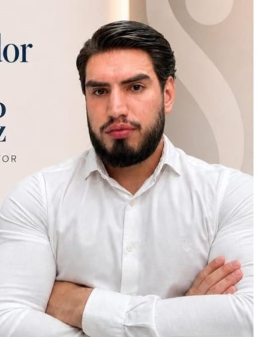

Nossa História / O Fundador
"A Saluel Saúde nasceu com o firme propósito de quebrar as barreiras do atendimento médico tradicional, unindo quatro grandes pilares do bem-estar em um único ambiente moderno e acolhedor."
Gustavo Diniz

Sobre A Clínica
Estamos localizados bem no centro de São Roque, na avenida João Vinte e três, no número 51. Atendemos de segunda a sexta, das 8 às 18 horas, e aos sábados das 8 às 14 horas. Localização fácil e acessível para atendermos nosso clientes com o máximo conforto.
Acreditamos que a verdadeira saúde se alcança cuidando da mente (Psicologia), do corpo de dentro para fora (Nutrição), do sorriso (Odontologia) e da autoestima (Estética). Nossa equipe trabalha de forma integrada para dar o melhor suporte aos nossos pacientes.